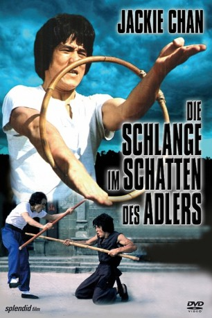

#4267 Die Schlange im Schatten des Adlers
Alternativ: Snake in the Eagle's Shadow (Englischer Titel)
 
 IMDB-Wertung: 7.5 / 10
IMDB-Wertung: 7.5 / 10  Metascore: 0
Metascore: 0 
Kampfsport-Film aus Hong Kong aus dem Jahr 1978. Der junge Küchenhelfer Chien Fu (Jackie Chan) findet in seiner Küche den schwer verwundeten Shaolin-Rebell Pai. Aus Dank für seine Hilfe lehrt ihm der Alte die Kunst des Shaolin-Kung-Fu, was sich als äußerst nützlich erweist.
Jahr: 1978
Dauer: 97 Minuten
FSK: 16
Land: Hong-Kong Studio: A.B.Tonspuren: DD2.0 - ,
Untertitel: Englisch,
Auflösung: 1080p (1920x800) Größe: 9379 MB
Genre: Action, Komödie
Regisseur: Woo-Ping Yuen
Drehbuch: Buccaneer Media
Soundtrack:
Darsteller:
 Jackie Chan als Chien Fu
Jackie Chan als Chien Fu Chi Ling Chiu als Mr. Liang - brick-breaking demo
Chi Ling Chiu als Mr. Liang - brick-breaking demo- Siu Tin Yuen als Grandmaster Pai Cheng-Tien
- Jang Lee Hwang als Lord Sheng Kuan
 Dean Shek als Teacher Li
Dean Shek als Teacher Li- Roy Horan als Russian
 Hark-On Fung als Snake Fist School Master
Hark-On Fung als Snake Fist School Master Lung Chan als Substitute Instructor
Lung Chan als Substitute Instructor- Tien Lung Chen als Three Provinces Champ
- Yao Lin Chen als Master Hung, Hung Wei School
- Kam Chiang als Ah Kwai, Magistrate's son
- Hsia Chien als
 Hsia Hsu als Su Chen
Hsia Hsu als Su Chen- Chiang Wang als
- Gam Yam als Chang, The Cook
- Chris Hilton als Chien Fu , uncredited
- Warren Rooke als Grandmaster Pai Cheng-Tien , uncredited
- Rik Thomas als Russian , uncredited
- Ted Thomas als Master Shang Kuan Yin / Teacher Chui , uncredited
Datei: X:\HD-Eastern-Collections\Jackie Chan\Schlange im Schatten des Adlers, Die (1978, FSK16, 1920x800).mkv seit 30.08.2016
Festplatte: HD Eastern+Western
 Es gibt insgesamt 58 Filme in der Gruppe 'HD-Eastern-Collections\Jackie Chan'
Es gibt insgesamt 58 Filme in der Gruppe 'HD-Eastern-Collections\Jackie Chan'